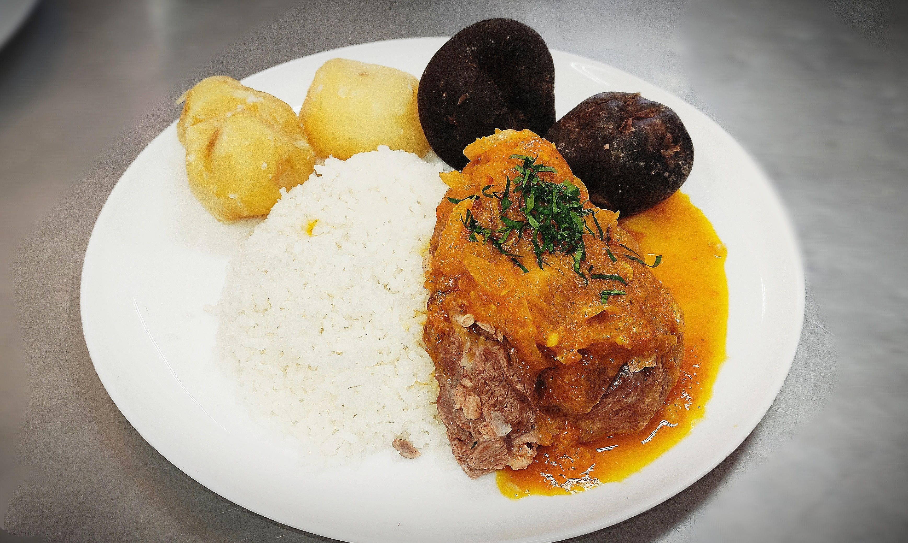

En la lista de platos típicos de Oruro sobresale el thimpu, cuyo nombre parece ser la conversión a la lengua aimara de la palabra “tiempo”.
Es una variación del puchero español. Este puchero de cordero tiene el mérito de tener un plato sólido y completo.
Por el contrario, nuestro Thimpu está preparado con base en carne de cordero, papas, chuño, arroz. Hay dos formas de servirlo: una con el caldo de todo lo anterior y otra con el caldo aparte. Ahí su diferencia!!
|  | Thimpu |